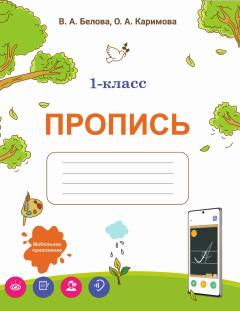

P11-sinf o'quvchilari uchun yozuv ko'nikmalarini rivojlantiruvchi o'quv qo'llanma.
Ushbu qo'llanma umumiy o'rta ta'lim maktablarining 1-sinf o'quvchilari uchun mo'ljallangan yozuv mashqlaridan iborat. Kitobda harflarni to'g'ri yozish, bo'g'inlarga ajratish va savodxonlikni oshirishga qaratilgan turli topshiriqlar jamlangan.